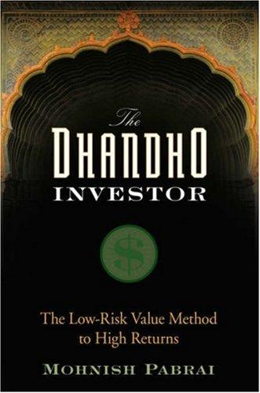

"Dhandho"是古吉拉特语词汇，源自梵语"Dhana"（财富），字面意思接近"能创造财富的营生"。莫尼什·帕伯莱（Mohnish Pabrai）在2007年由Wiley出版的《The Dhandho Investor: The Low-Risk Value Method to High Returns》一书里，用这个词概括了一群人的生意经：1972年被乌干达驱逐出境的古吉拉特帕特尔（Patel）族群移民美国后，从打理汽车旅馆起步，如今仅占美国人口约0.2%的帕特尔家族，却拥有全美近半数的汽车旅馆。帕伯莱认为，他们靠的不是冒险，而是一套反复出现的低风险打法——买下别人不想要、价格已经压到极低的旅馆，靠现金流稳步偿还贷款，几年后再复制下一家。
帕伯莱1964年生于孟买，就读美国克莱姆森大学。1991年，他用401(k)账户里约3万美元加上约7万美元信用卡透支，创办IT咨询公司TransTech Inc.，2000年以2000万美元卖给Kurt Salmon Associates；1999年他用卖公司所得创立Pabrai Investment Funds。他公开把自己的方法称为对巴菲特和芒格的"厚颜无耻的克隆"（shameless cloning），2008年6月25日，他与另一位价值投资人Guy Spier一起以65万零100美元竞得与巴菲特共进午餐的机会，拍卖所得捐给旧金山的Glide Foundation，帕伯莱出了大头，约43.3万美元。
全书的核心口诀是"正面我赢，反面我也输不了多少"（Heads, I win; tails, I don't lose much）。帕伯莱用两个案例支撑这句话：拉克希米·米塔尔（Lakshmi Mittal）收购困境钢铁资产，相当于用一角钱买别人花一美元建成的工厂；理查德·布兰森（Richard Branson）1984年创办维珍大西洋航空，则靠租赁飞机和营运资金时差，尽量不占用自己的资本。随后的九项框架把口号拆成筛选顺序：投资已经存在且容易理解的生意，寻找处于困境行业的公司，确认耐久护城河，只在少数机会里下大注，坚持安全边际，偏爱"低风险、高不确定性"，并优先研究复制成熟模式的公司而非承担发明成本的先行者。高不确定性不等于高风险；前者表示结果分布宽，后者才是永久损失大。下注部分引入凯利公式（Kelly Formula），卖出部分则借《摩诃婆罗多》中阿比曼纽（Abhimanyu）只学会冲入敌阵、却没学会脱身的故事，要求买入前先写退出条件。护城河消失、价格达到内在价值或出现明显更优机会，都是重估持仓的理由。
T2 Partners普通合伙人惠特尼·蒂尔森（Whitney Tilson）说自己"一口气从头读到尾"（I read The Dhandho Investor from start to finish in one sitting—I couldn't put it down）；《像巴菲特一样选股》作者蒂莫西·维克（Timothy Vick）写道，书中借企业家案例与帕伯莱本人的实践解释获取高回报所需的技巧。机械工业出版社2008年出版陈龙译本《憨夺型投资者》，2017年又推出陈丽芳的新译本。阅读时仍要给汽车旅馆、钢铁和航空案例加上时代标签：税制、融资条款与竞争环境会变化，不能把历史上的低风险直接移植到今天。经营汽车旅馆的人能改价格、控制成本并与银行谈判，买上市公司少数股份的投资者没有这些权力；后者必须把管理层、债务契约与资本配置也计入安全边际。可保留的是分析顺序——先看最坏情形需要多少现金、债权人和股东谁先承担损失，再讨论上行空间；还要区分资产便宜与普通股东真正能取得价值。卖出条件必须在买入前写下，否则"长期持有"很容易沦为给判断错误找借口。只有亏损下限能够估计，低风险与高不确定性的组合才成立，并且还要单独检查流动性、税务、汇率、政策与再融资风险。